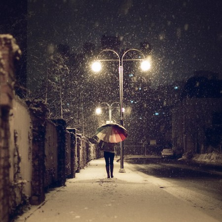

Esta es la primera entrega del manual de un Erasmus. El que suscribe, un servidor, apura sus últimas semanas de dicha experiencia y os va a tratar de hacer mucho más sencillo la parte más negativa de esta aventura, el maldito papeleo. En la primera entrega analizamos cómo buscar alojamiento en Bruselas, según las opciones que quieras o el estilo de vida que quieras hacer en tu Erasmus. Vamos al toro.
Primera opción, un kot, es decir, un edificio con varios apartamentos con la peculiaridad de que compartes algunas necesidades con el resto de vecinos. Este detalle varía según el kot, los hay que solo compartes la cocina, también donde compartes cocina y baño. En algunos hay incluso sala comunes de televisión. Esta opción es quizá la más óptima para un estudiante Erasmus, ya que estás en permanente contacto con estudiantes de todo el mundo, se hace mucho más fácil hacer vida social. Hay una agencia en Bruselas dueña de muchos kots en el centro de la ciudad, tienen convenio con la VUB, se llama Quartier Latin Brussels. Los alquileres rondan los 400 euros con internet y gastos como agua, luz y gas incluido. También podéis buscar en Kots o Brukot.
Segunda opción es vivir en un piso compartido o alquilar un estudio. La ventaja de esta opción es la privacidad. La desventaja es no estar en un ambiente estudiantil, pero eso varía según los objetivos que te hayas marcado para tu Erasmus. Buscar piso o estudio en Bruselas es relativamente fácil. Os dejo un listado de portales donde podéis buscar piso. Podéis acceder a correos electrónicos, números de teléfonos y demás para contactar el casero. Immoweb, Appartager, Xpats y Vivastreet. El precio varía mucho según zonas y espacio del inmueble.
La tercera opción es una residencia de estudiantes, suelen estar dentro de los campus de la universidad, por lo que significa que están más apartadas del centro de la ciudad. Para alquilar una habitación aquí, en la mayoría se comparte baño y cocina, contactar con vuestro coordinador internacional en Bruselas, él os proporcionará la información y os hará los trámites. Suele ser la opción más económica, sobre unos 300 euros, tiene las mismas ventajas que un kot, ambiente estudiantil permanente.
Consejos: Elijáis la opción que elijáis hay varios consejos que os ayudarán. La fianza que hay que abonar es por ley un máximo de dos meses, no abonáis ninguna fianza ni firméis nada antes de ver el piso. Hay muchas posibilidades de alquiler en Bruselas, no hace falta precipitarse. Preguntad siempre cuál es el precio final y sí se incluyen los gastos como agua, luz, etcétera, y por último echadle un ojo dónde os instaléis por si hubiera algún desperfecto para evitar problemas a la hora de que os reembolsen la fianza.
Para sugerencias y preguntas no dudéis en comentar. Pasad buen fin de semana!